Patients from 48 states and 9 countries
We provide neurological care dedicated to correcting neurological symptoms
The Keiser Clinic combines advanced diagnostic technologies with the latest in clinical neuroscience to find the mechanism driving your symptoms — and treat it.
I'm Ready to Get Better


 @thekeiserclinic
@thekeiserclinic